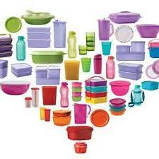

Apaixonada por Tupperware há pelo menos uns 18 anos...desde que me casei, coleciono e uso muito todas as peças que adquiri. Por isso, em 2013 resolvi me tornar uma consultora para levar a outras famílias os benefícios de usar produtos de tão alta qualidade. Venha você também para o nosso mundo Tupperware!
